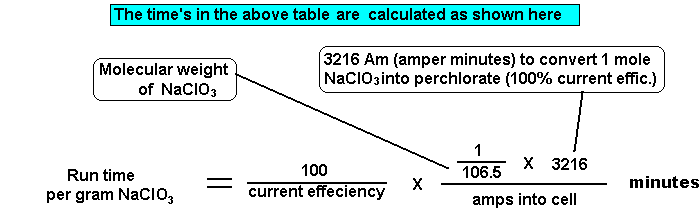

The Chlorate concentration at which the current efficiency starts to decline
is not a well defined point and varies form cell to cell. There are a lot of variables that effect
the point at where the low Chlorate concentration effects current efficiency. I
have assumed that it is effected at about 100g/l Chlorate which is roughly where
it happens in a fairly typical cell. The actual current efficiency that you will get for a particular Anode and cell set up
will be difficult to predict in advance. Titrations for Chlorate can be very useful.
| 1 Mole Na Chlorate = 106.45g. One mole Na Perchlorate = 122.45g |
| Run time in minutes per gram of
NaClO3 for 50% current efficiency | ||
|---|---|---|
| Amps | 50% current efficiency Chlorate level below about 5g/l (at the end of the run) |
|
| 2 | 30.19 | |
| 4 | 15.09 | |
| 8 | 7.54 | |
| 10 | 6.03 | |
| 15 | 4.02 | |
| 20 | 3.01 | |
| 30 | 2.01 | |
| 50 | 1.20 | |
| 75 | 0.805 | |
| 100 | 0.603 | |
| 150 | 0.402 | |

Run time in hours = (5360 X Weight of Chlorate to convert) / (Molecular weight of Chlorate X Amps X %CE)
If using Chlorate solution to top up your cell you will of course need to factor this into your run times.
The current
efficiency will be about 80% when the Chlorate levels are above about 100g/l but
as the Chlorate level drops below the 100g/l mark (as more and more Perchlorate
is formed) the current efficiency drops and you get an overall current
efficiency of 50% (or less) if you run your cell to the point where there is very little
Chlorate left.
This saves labour and you
can take out nearly pure Perchlorate out of the cell by simply evaporating off
all the water. You may wish to destroy the small amount of Chlorate left in the
cell first by chemical means.
If you want to run your cell and stay in the
high current efficiency region (>100g/l Chlorate) then you can stop running
your cell at the recommended time (assume you are getting approx. 80% CE) and then attempt to take out a crop of Perchlorate. Crystalizing out solid Sodium Perchlorate is not really possible for the Amateur to do
successfully and the only real practical method is to reduce the Chlorate to a low level, chemically
destroy residual Chlorate and evaporate all the water away. Titrate cell contents to see what Chlorate levels are at the end of the run.
Note that Platinum Anodes will erode if used to reduce the Chlorate concentration
to a low value. Keep a check on Anode erosion.
Lead Dioxide is really needed (Pt will do it if erosion is ignored) if you wish to run a cell from Chloride to Chlorate to Perchlorate to low Chlorate concentration (this overall method is not to be recommended IMO), without stopping. Platinum will erode if you use it to go from Chloride
to Perchlorate. Erosion will be greatest during the time when Chlorate concentration is low and there is still Chloride in the cell but it may still be worth taking an
erosion hit in your particular situation if you want to save labour. Pt plated Titanium Anodes can be ruined
after a batch or two!
If making Potassium Perchlorate from Potassium Chlorate, K Perchlorate will crystallize out of solution due it it's low solubility. Don't know much about %CE in K Perchlorate cells using K Chlorate as the starting material. It has been done by 'Swede'with OK %CE figures.
From Swede:
If you know the amount of dry (and anhydrous) solid product you have produced in grams from a run you can calculate the CE using the following simple formula:
| Process | Formula for CE in % |
| Na Chloride to Chlorate | 151.08 * Weight/Ah |
| Na Chlorate to Perchlorate | 43.78 * Weight/Ah |
| Na Chloride to Perchlorate | 175.10 * Weight/Ah |
There is a small spreadsheet here that is useful for calculating %CE from two successive Chlorate titrations of a Perchlorate cell.
| Na | 22.99 |
| K | 39.1 |
| Cl | 35.45 |
| O | 16 |
| NaCl | 58.44 |
| NaClO3 | 106.44 |
| NaClO4 | 122.44 |
HIT THE BACK BUTTON ON YOUR BROWSER